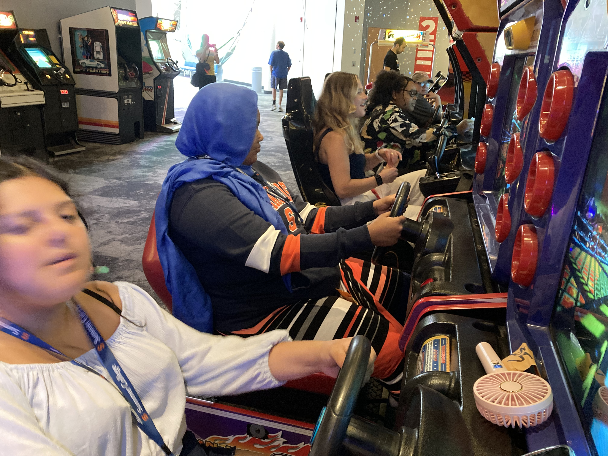
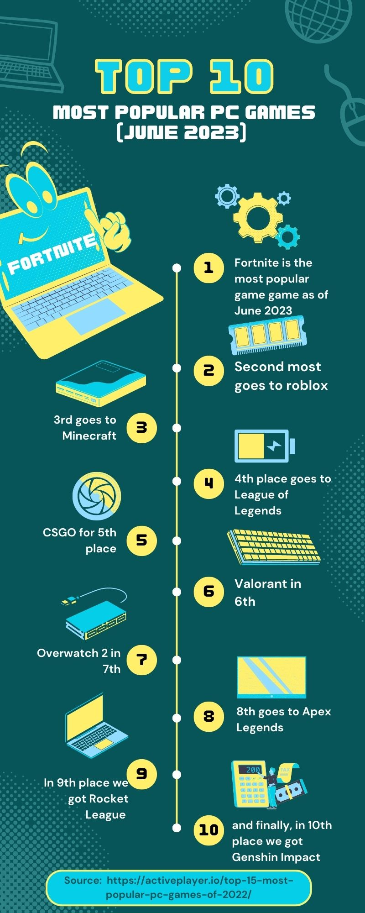

Strong Museum
Bonsitu Abu / July 27th, 2023
The artifact that I had at the strong museum was about the first black women game designer Muriel Tramis! Muriel Tramis has a passion for female led characters and loved mystery stories. The exhibit Marae and I worked on together was about black women in STEM and we made the conclusion that Muriel Tramis helped inspired the program Black Girls CODE in 2018, which was about getting girls of colors from ages 7 to 17 to be STEM leads.


My favorite part of the museum was the level up section, when I tried to be stealthy while being in a rush to get back on time.
Favorite Robot
Bonsitu Abu / July 25th, 2023
My Favorite robot character from any kind of Media is Lefty from FNAF He's my favorite character because of the role he plays in the story and I find it funny how in the game he is worth $5 in the game and can go as low as $1. But he has a big play in the lore and story. My character influences about robots to show how robots can be used for the entertainment industry. Nothing changed to much. I can be more careful in thinking about AI/Robots becauase there are many purposes for specific robots.
My infographic
Bonsitu Abu / July 24th, 2023
As someone who enjoys video games, I wanted to see what video games where most popular on computers so I did my infographic on the top 10 most popular pc video games.
DeScrabble
Bonsitu Abu / July 21st, 2023

My game is called Descrabble. In order to play it you and another person get an encrpted message. To win the game you have to decrypt the message with the provided key and then have to figure out what the scrabbled word was. One problem we encountered was figuring out how to make the game a bit easier for people to figure out. We made it so that there was a hint of what the key would look like. Ex. B=I. I wouldnt change our game.
My Favorite HTML Tutorial
Bonsitu Abu / July 20th, 2023
The video below is a tutorial on how to change the background color in HTML. I love this video because its short yet helpful
Meme blog

By: Bonsitu Abu / Date: 07/19/2023
My meme conveys a strong point on how AI Art takes away from artist who went to college and get an art degree only for it to be seen as useless due to ai art and computers doing all the work.
Cryptology Spotlight: LaNaia Jones
By: Bonsitu Abu / Date: 07/18/2023
When looking at Cryptology and women who have played a great role in this field, that's also a person of color, our spotlight is LaNaia Jones! LaNaia Jones work is mainly in charge of all the agency IT systems and personnel. She served the NSA’s deputy CIO as well as the safeguarding executive. With over 19 years of experience, in leadership and technical roles in the NSA and managed oversight in IT. She has worked in Tokyo Japan for 4 years on a mission and is currently residing in Marlboro, Maryland after around 20 years of working.